魔搭 ModelScope 社区 · 收录自第 11 章知识库，查看来源与登记信息 ↗
Laya 开源：比Jev快4倍！421M 参数，33 毫秒完成 System 1 决策
Convai Innovations 开源了非自回归 System 1 决策模型 Laya。开源不到 2 天，Laya 已升至 HuggingFace 热门模型榜第三名，GitHub 获得 2.1k Stars。 Laya 是一款面向分类与决策任务的非自回归模型，主要用于从文本中快速识别类别、风险等级和处理优先级。它不需要像大语言模型一样逐字生成回答，而是直接输出判断结果及对应概率，适用于邮件分流、网络钓鱼检测、内容审核和客服路由等场景。 Laya 源自 Nandakishor M 在 2025 年公开的强化学习决策研究。此后，TypeSafe AI 发布了采用相似非自回归思路的闭源模型 Jev，Nandakishor 则进一步重构原有方案，将其扩展为一个完全开放、面向通用横向场景的 System 1 决策模型：RL Agent。 Laya 包含 421M 参数，基于双向编码器构建，并使用 RLCD 训练概率输出。在 GPU 上，其推理延迟为 33～38 毫秒；按 Jev 公布的 150 毫秒延迟计算，速度约快 4 倍。 模型采用 Apache 2.0 协议开源，可在本地部署，并通过校准概率为自动化决策提供更可靠的置信度依据。
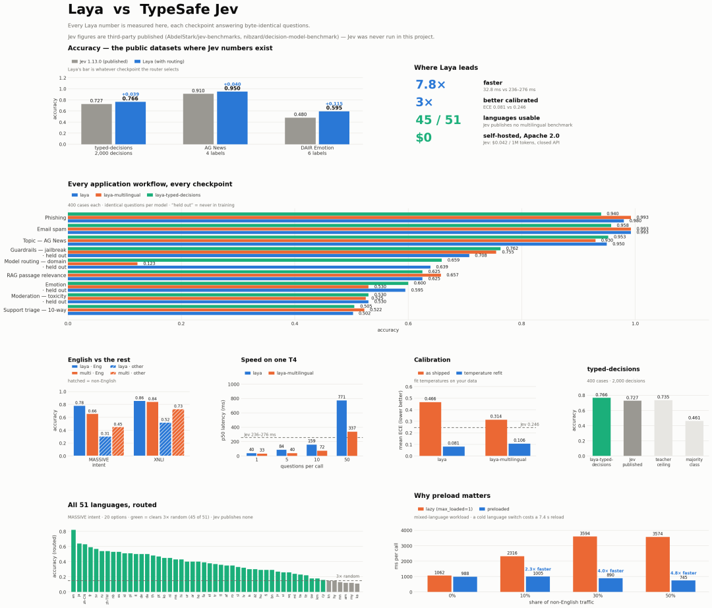
开源地址：
模型链接：https://modelscope.cn/models/convaiinnovations/laya
代码仓库：https://github.com/NandhaKishorM/laya
下面是它的完整工作原理、架构设计、采用严格适当评分规则的 RLCD 数学原理，以及非自回归决策模型为何代表未来。
01 · 真正的问题：为什么大语言模型很不擅长做决策
每一套现代 AI 流水线都有一个巨大的瓶颈：生成式大语言模型正被用于处理简单的反射式决策。 当客服工单到达、邮件进入收件箱，或者用户向 API 提交提示词时，通常只需要回答几个简单问题：
这应该交给哪个部门？
这封邮件是不是网络钓鱼攻击？
这个提示词是否试图越狱系统？
按 0～3 级衡量，这个问题有多紧急？
为此调用一个 8B 或 70B 的生成式大语言模型完全是大材小用。整个过程需要等待 500～2,000 毫秒，让 Token 逐个流式生成；需要支付实际推理成本；之后还得编写正则表达式或JSON 解析器，从自由格式文本中提取一个干净的标签。最糟糕的是，大语言模型喜欢产生幻觉和虚假的置信度。当一个大语言模型输出 "confidence: 0.95" 时，它只是在预测一串听起来很自信的 Token，背后没有任何数学校准。 真正需要的是一种像人脑 System 1 那样工作的模型：能够即时做出反射式决策，给出诚实、经过校准的概率，并且在标准硬件上只需 30～40 毫秒。
02 · 三种决策原语
遵循 System 1 理念，RL Agent 接收一个状态（原始文本、邮件、工单或 JSON 文档）以及一个或多个带类型的问题，然后通过一次并行前向传播完成全部评估。 它使用三种原语：
choice ：从一组以字典形式定义的标准中选择一个选项，返回选中的标签、每个候选选项的概率以及置信度分数。非常适合部门路由、意图识别和主题分类。
score ：按照 0、1、2、3 之类的有序量表为状态评分，返回期望分值、各等级的概率和置信度。非常适合评估客户不满程度、紧急度和提示词危害严重性。
noul ：直接回答一个布尔问题，返回经过校准的 P(true) ，取值范围为 0.0～1.0。非常适合检测网络钓鱼、垃圾邮件、越狱或客户流失风险。
因为输出空间严格限定为概率和数字，所以模型从不生成文本，不会产生幻觉，也不可能输出格式损坏的JSON。
03 · 模型架构：4.21 亿参数
在 2025 年 3 月的工作中，Nandakishor M 使用了冻结的序列嵌入，并搭配一个独立的 PPO价值网络。它可以进行逐轮销售预测，但并非端到端，也无法在运行时处理动态出现的新问题。 RL Agent 采用了一个包含 4.21 亿参数、由两个紧密耦合组件组成的端到端架构：
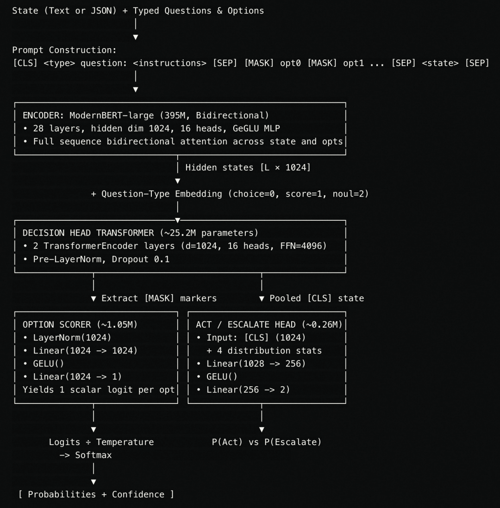
ModernBERT-large 主干网络
RL Agent 使用 ModernBERT-large（3.95 亿参数）作为基础编码器。ModernBERT 包含 28层，隐藏维度为 1024，配备 16 个注意力头和维度为 2624 的 GeGLU 中间层，并通过旋转位置嵌入（RoPE）支持 8,192 个 Token。由于它是完全双向的，每个 Token 都能同时关注状态和选项中的所有部分。
[MASK] 选项提取机制
对于每个问题，build_sequence 函数会按如下方式封装提示词：
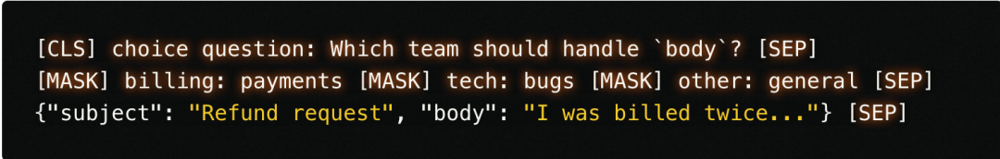
每个选项都有一个 [MASK] Token。数据经过 ModernBERT 和两层决策头 Transformer 后，通过 torch.gather 专门抽取这些标记位置上的隐藏状态。 选项评分器 MLP 将每个 1024 维标记状态投影成一个标量 Logit。对属于该问题的所有选项执行Softmax，即可得到候选概率分布：
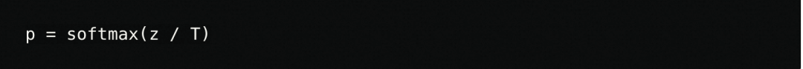
其中，T 是根据问题类型和选项数量分别拟合的温度参数。
“行动”与“升级处理”决策头
在真实的自动化系统中，需要判断何时可以信任模型，何时应该交给人工。Laya 增加了一个“行动/升级处理”决策头：它接收池化后的 [CLS] Token（1024 维），并与以下 4 个分布特征拼接：
最高概率：max(p)
前两名差值：p_top1 - p_top2
归一化熵：H(p) / log(K)
选项预算比：K / 255
这个 1028 维向量经过一个两层 MLP，输出 [P(act), P(escalate)] 。
多个问题只需一次前向传播
以一封邮件和针对它提出的 5 个问题为例，这 5 个序列会被整理成一个批次。ModernBERT在 GPU 上通过一次前向传播即可处理全部问题，耗时约 35 毫秒。
04 · 使用 RLCD 训练：校准背后的数学原理
如何用强化学习训练这种模型，让它给出的概率真正经过校准？
普通分类与朴素强化学习的陷阱
如果使用交叉熵训练分类器：
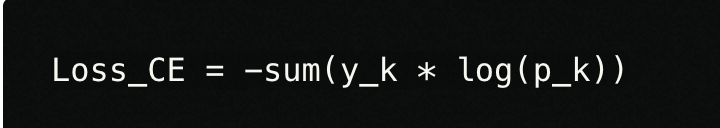
那么只有当获胜类别的 Logit 趋近于无穷大时，损失才能被最小化。模型会因此变得过度自信。 如果尝试使用二元奖励的标准强化学习（预测正确奖励 +1 ，错误奖励 0 ），期望奖励为：
策略梯度会迫使最高概率趋向 1.0，其余所有概率趋向 0.0。换句话说，朴素强化学习通过破坏校准来最大化准确率，让模型成为一台“自信地犯错”的机器。
严格适当评分规则
RLCD（面向校准决策的强化学习）的基础，是将严格适当评分规则作为奖励。 在决策理论中，当模型报告分布 q 、真实结果为 y 时，评分规则 S(q, y) 会给出一个分数。当且仅当 q 等于真实分布 p 时，期望得分能唯一达到最大值，这个评分规则才是严格适当的：
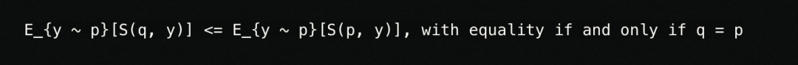
这保证了只有当模型报告诚实概率时，它才能获得最高奖励。 复合奖励结合了三种适当评分：
1. 对数评分（Slog ）
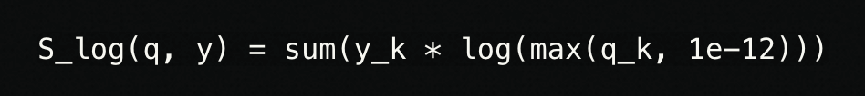
如果模型赋予真实结果的概率很低，这一规则会施加重罚。为了保持数值稳定性，下限被截断为 -9.21。
2. 球面评分（Ssph ）
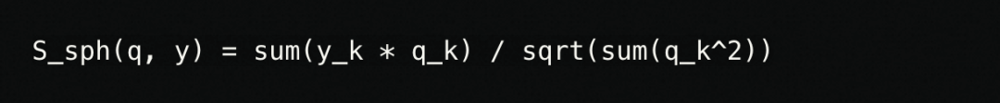
这是一个取值范围为 [0, 1] 的有界分数。它会奖励模型将概率质量分配给正确类别，同时避免纯对数损失带来的极端梯度尖峰。
3. 排序概率评分（Srps ）
它用于有序的 score 问题，例如 0、1、2、3 级量表。如果真实紧急度为 3 级，那么猜成 2 级显然比猜成 0 级好得多。RPS 衡量的是两个累积分布之间的平方距离：
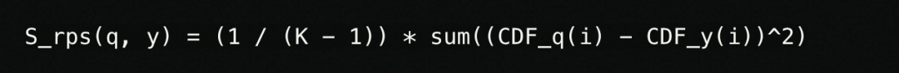
在奖励中减去 RPS，可以教会模型理解量表上的距离。
策略梯度更新（采用组基线的 REINFORCE）
训练使用纯策略梯度，监督式交叉熵损失为零：
高斯探索： 对于每个问题，训练过程采样 G = 8 组带噪候选 Logit：
噪声向量会被投影，使其在所有选项上的和为零，即 epsilon - mean(epsilon)，因为给所有Logit 加上同一个常数会在 Softmax 中相互抵消。探索标准差 sigma 从 1.0 逐渐衰减到0.3。 带噪分布：
奖励评估：
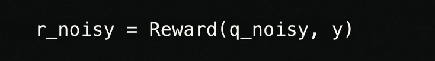
组均值优势（GRPO 风格）： 相对于 8 个样本的组均值计算优势：
策略损失： 使用高斯对数概率：
成本敏感的行动头： 行动头从 {act, escalate} 中采样动作，并根据以下成本矩阵获得奖励：
自动行动且结果正确：+1.0
自动行动但结果错误：-3.0
升级给人工处理：-0.5
只有在下式成立时，自动执行操作才是有利的：
因此，该策略会自动学会：只有当置信度高于 62.5% 时才采取行动。
05 · 使用 TD(lambda) 建模多轮轨迹
在 2025 年 3 月的论文中，研究使用 PPO 预测销售转化在多轮对话中的变化。当时发现的一个重大问题是数据泄漏：如果在第 1 轮就输入完整对话的嵌入，模型便会看到来自未来的信息。 在 RL Agent 中，这个问题得到了解决：
对话按轮次被切分成逐步增长的前缀（第 1 轮、第 2 轮、第 3 轮……），模型只能接收截至当前轮次的上下文。
训练使用以蒙特卡洛回报为目标的时序差分学习，即 TD(lambda = 1.0)：
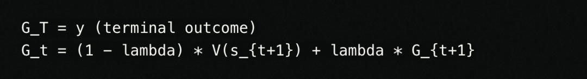
当 lambda = 1.0 时，早期轮次会直接针对对话的真实终局结果进行训练，而不是从模型自己的猜测中自举。这样，模型便能学习哪些早期对话模式真正会带来转化或流失。
06 · 通过归一化熵计算置信度
对于每个问题，模型都会返回一个 0.0～1.0 的置信度分数，并使用归一化香农熵进行计算：
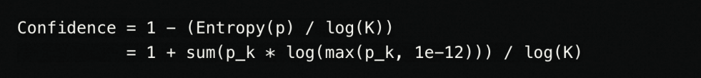
其中，K 是选项数量：
如果模型完全无法确定，所有选项的概率都是 1/K 。此时熵等于 log(K) ，置信度正好为 0.00 。
如果模型完全确定，某一个选项的概率为 1.0 ，此时熵为 0，置信度为 1.00 。
07 · 数据集流水线：不走任何合成捷径
许多团队会让大语言模型生成合成训练问题和标签，以此构建此类模型。这是一个错误。使用合成标签训练校准模型，只会让训练出的模型针对大语言模型自身的错误和幻觉进行校准。 训练流水线使用 100% 由人类标注的真实公开数据集，覆盖以下领域：
客服分流与意图： 真实客服对话、银行业务意图和工单路由队列。
推断与事实核查： 前提—假设对、事实验证和矛盾检查。
内容安全： 针对有毒言论、骚扰和严重辱骂的人类共识标签。
安全与护栏： 真实的越狱提示词和提示词注入攻击。
量表与质量： 对帮助性、复杂度和正确性进行多维度人工量表评分。
多轮轨迹： 具有已验证最终结果的 SaaS 销售与客服互动。
为了防止模型走捷径，该数据流水线会动态打乱选项顺序、改写问题表述、在原始文本与嵌套 JSON 状态之间交替切换，并注入随机干扰问题。
08 · 真实场景基准测试：Laya 对比 TypeSafe Jev
团队在微调后的检查点上进行了广泛评估，共测试 25,424 个问题，其中包括 23,024 个任务内问题，以及来自训练期间从未见过的任务家族的 2,400 个零样本问题。 随后，评估结果与 TypeSafe Jev 发布时公开的数据进行了直接对比。
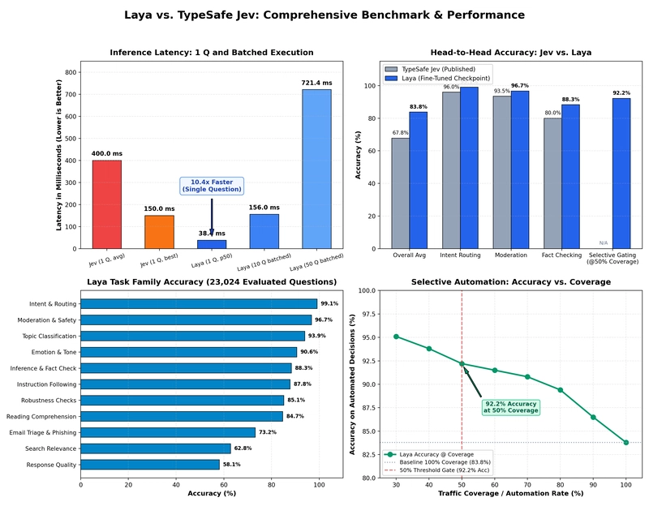
正面对比
| 指标/维度 | TypeSafe Jev（公开数据） | Laya（微调检查点） | 分析/优势 |
|---|---|---|---|
| P50 延迟（1 个问题） | 平均约 400 ms（70～500 ms，最佳 150 ms） | 38.4 ms（p95：42.1 ms） | Laya 平均快约 10.4 倍；相比 Jev 最佳情况快 4 倍 |
| 批处理延迟（10 个问题） | 串行约 1,500 ms / 约 400 ms | 156.0 ms（p95：158.4 ms） | Laya 评估 10 个问题的时间，相当于 Jev 回答 1 个问题 |
| 批处理延迟（50 个问题） | 数秒 / 受到速率限制 | 721.4 ms | 高吞吐并行小批处理 |
| 基准准确率 | 67.8%（覆盖 4 个生产工作流） | 任务内宏平均准确率 83.8% | Laya 总体准确率高 16.0 个百分点 |
| 意图识别与客户路由 | 约 95%～98% 一致率 | 准确率 99.1%（ECE：0.009） | 路由任务的校准误差近乎为零 |
| 审核与内容安全 | 约 92%～95% 一致率 | 准确率 96.7%（ECE：0.061） | 安全边界区分清晰 |
| 推断与事实验证 | 未单独报告 | 准确率 88.3%（ECE：0.054） | 完整双向注意力能够捕捉矛盾 |
| 指令遵循任务 | 专有内部数据集 | 任务内 87.8% / 零样本 86.3% | 已证明可泛化至未见任务 |
| 邮件分流与网络钓鱼 | 厂商定制工作流 | 准确率 73.2%（ECE：0.017） | 定制邮件清洗与网络钓鱼过滤器 |
| 选择性自动化（覆盖率 50%） | 宣称可升级给人工处理 | 准确率 92.2%（ECE：0.041） | 安全的自动化门控（置信度 >= 0.85） |
| 模型权重与代码 | 闭源 / 专有 API | 100% 开源，Apache 2.0 | 完整的数据主权与透明度 |
| 推理成本 | 每百万输入 Token 持续收费 0.042 美元 | 自托管为 0.00 美元 | 可运行于普通 GPU、Mac MPS 或 CPU |
| 多轮轨迹建模 | 静态状态快照 | TD(lambda = 1.0) 前缀建模 | 真正的时间信用分配 |
| 部署模式 | 仅限云端，数据需外发 | 隔离网络 / 本地 / 端侧 | 数据零外流，符合 HIPAA/GDPR 要求 |
详细任务内表现（评估 23,024 个问题）
| 任务家族 | 问题数（N） | 准确率 | ECE（校准） | NLL |
|---|---|---|---|---|
| 意图识别与路由 | 1,475 | 99.1% | 0.009 | 0.181 |
| 审核与安全 | 2,708 | 96.7% | 0.061 | 0.153 |
| 主题分类 | 749 | 93.9% | 0.029 | 0.196 |
| 情绪与语气 | 1,825 | 90.6% | 0.018 | 0.238 |
| 推断与事实核查 | 3,022 | 88.3% | 0.054 | 0.340 |
| 指令遵循任务 | 600 | 87.8% | 0.046 | 0.302 |
| 鲁棒性检查 | 744 | 85.1% | 0.108 | 1.058 |
| 阅读理解 | 770 | 84.7% | 0.083 | 0.409 |
| 邮件分流与网络钓鱼 | 2,691 | 73.2% | 0.017 | 0.595 |
| 搜索相关性 | 733 | 62.8% | 0.066 | 0.728 |
| 回复质量评分 | 3,146 | 58.1% | 0.023 | 1.009 |
| 任务内总体宏平均 | 23,024 | 83.8% | 0.060 | 0.468 |
零样本泛化（2,400 个从未用于训练的问题）
| 任务家族（零样本） | 问题数（N） | 准确率 | ECE | NLL |
|---|---|---|---|---|
| 指令遵循任务 | 600 | 86.3% | 0.045 | 0.319 |
| 审核与安全 | 600 | 79.7% | 0.171 | 1.415 |
| 情绪与语气 | 600 | 58.3% | 0.318 | 1.976 |
| 情感与评分 | 600 | 36.2% | 0.291 | 1.798 |
| 零样本总体宏平均 | 2,400 | 65.1% | 0.207 | 1.377 |
选择性自动化的实际表现
由于模型的置信度分数通过归一化熵进行校准，开发者可以直接在代码中使用这些分数来控制是否执行操作：
接受全部答案：准确率 83.8%。
只接受置信度最高的前 80% 预测：准确率 89.4%。
只接受置信度最高的前 50% 预测：准确率 92.2%。
这意味着，如果将自动路由阈值设为置信度 >= 0.85 ，模型可以用 92% 以上的精确率自动处理大约一半的客服工单、安全告警或邮件分流任务，并将真正棘手的情况升级给人工处理。
09 · 如何在 Python 中运行
只需一行命令，即可通过 PyPI 包直接运行 Laya：
pip install laya从魔搭下载模型
modelscope download --model convaiinnovations/laya --local_dir convaiinnovations/laya快速开始代码
import laya
## 从 ModelScope 下载并加载微调模型
agent = laya.load("convaiinnovations/laya")
## 定义输入状态（原始文本或 JSON 字典）
state = {
"from": "user@company.com",
"subject": "Charged twice on March invoice",
"body": "Hi, we were billed twice for invoice 4411. Please refund the duplicate today or we will cancel our plan."
}
## 定义带类型的问题
questions = {
"department": {
"type": "choice",
"instructions": "Which department should handle this email?",
"criteria": {
"billing": "invoices, payments, refunds",
"technical": "bugs, outages, system errors",
"sales": "pricing, new contracts",
"other": "everything else"
}
},
"urgency": {
"type": "score",
"instructions": "How urgent is this request?",
"criteria": ["not urgent", "soon", "critical deadline or blocking issue"]
},
"churn_risk": {
"type": "noul",
"instructions": "Does the user threaten to cancel or leave?"
},
"is_phishing": {
"type": "noul",
"instructions": "Is this email a phishing or scam attempt?"
}
}
## 在一次前向传播中运行所有问题（GPU 上约 35 ms）
result = agent.predict(state, questions)
answers = result["answers"]
print("Department :", answers["department"]["choice"])
## -> billing (confidence: 0.94)
print("Urgency :", answers["urgency"]["score"])
## -> 1.84 / 2.0
print("Churn Risk :", answers["churn_risk"]["noul"])
## -> 0.892 (89.2% probability)
print("Phishing :", answers["is_phishing"]["noul"])
## -> 0.008 (0.8% probability)自动化门控逻辑
由于这些概率已经过数学校准，路由逻辑可以写得非常简单：
dept = answers["department"]["choice"]
conf = answers["department"]["confidence"]
if conf >= 0.85:
route_automatically(dept)
else:
send_to_human_triage(dept, reason=f"Low confidence ({conf:.2f})")点击阅读原文，即可跳转模型链接~
👇点击关注ModelScope公众号获取更多技术信息~